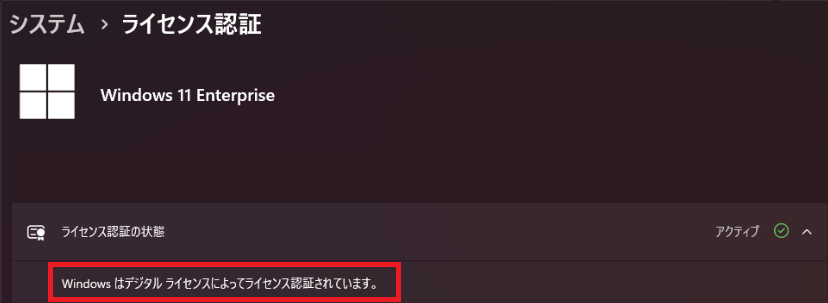

本記事はマイクロソフト社員によって公開されております。
こんにちは。Windows プラットフォーム サポートの城風です。
今回は、機能更新プログラム (Feature Update) 適用時に OS のライセンス認証が外れる動作とその対処方法についてご説明します。
概要
デジタル ライセンスによる認証が完了していない環境では、機能更新プログラム適用後に OS のライセンス認証が外れる動作が発生します。
対処策としては、主に機能更新プログラム適用前にデジタル ライセンスによる認証を完了させておくこと、もしくは機能更新プログラム適用後に再度ライセンス認証を行うことが挙げられます。
デジタル ライセンスによるライセンス認証とは
Windows OS のライセンス認証は、Windows デジタル ライセンスもしくは 25 文字のプロダクト キーのいずれかを用いて実施する必要があります。
デジタル ライセンスによるライセンス認証は、Windows 10 以降におけるライセンス認証方式です。
OS のプロダクト キーに依存しない認証方式であり、インターネットに接続することで、ライセンス認証の情報が自動的にマイクロソフトのライセンス認証サーバーにデジタル ライセンスとして保存されるため、一度認証すれば以降プロダクト キーは不要となります。
デジタル ライセンスは、お使いのハードウェアに関連付けられるため、一度認証したハードウェアはプロダクト キーがなくなった状態でも認証状態を引き継げる、といった利点があります。
機能更新プログラムを適用した際には、固有のプロダクト キーがワイプされますが、デジタル ライセンスを取得しているハードウェアは機能更新プログラム 適用後もライセンス認証がされた状態を引き継ぐことができます。
詳細
デジタル ライセンスが付与されていない場合の挙動
何らかの理由でデジタル ライセンスが付与されていない環境では、機能更新プログラム適用後にライセンス認証が外れる動作が発生します。
これは、機能更新プログラムの適用により固有のプロダクト キーがワイプされ既定のプロダクト キーに置き換わることでライセンス認証されていない状態となる仕様によるものです。
対処策
機能更新プログラム適用後に OS のライセンス認証が外れた場合の対処策
機能更新プログラム適用後にライセンス認証が外れる事象を回避するためには、以下いずれかの対処を行う必要があります。
- 機能更新プログラム適用前にデジタル ライセンスを付与する
- 機能更新プログラム適用後に再度ライセンス認証を実施する
- 認証方式を変更する
以下はデジタル ライセンスが付与されない場合に確認するポイントとなります。
確認ポイント その 1 : 通信先のブロックについて
デジタル ライセンスを付与するためには、ライセンス認証を行うためのエンドポイントに通信できる環境でライセンス認証を行う必要があります。
サードパーティー製品などでインターネット接続が制限されている環境では、デジタル ライセンスによる認証を行うためのエンドポイントについて のエンドポイントがブロックされていないかをご確認ください。
確認ポイント その 2 : Web 認証やボリューム ライセンス認証管理ツール (VAMT) を使用したライセンス認証について
デジタル ライセンスによるライセンス認証は、その性質上、Web 認証やボリューム ライセンス認証管理ツール (VAMT) を使用したライセンス認証の場合には付与されません。
このため、Web 認証や VAMT を用いて OS のライセンス認証を実施している環境の場合には、機能更新プログラム適用後に再度ライセンス認証を実施してください。
確認ポイント その 3 : Microsoft Account Sign-in Assistant (wlidsvc) サービスが無効な場合について
Microsoft Account Sign-in Assistant (wlidsvc) サービスが無効の環境では、デジタル ライセンスは付与されません。
デジタル ライセンスを付与したい場合には、Microsoft Account Sign-in Assistant を有効にした上で再度 OS のライセンス認証を実施してください。
この動作は下記の公開情報にも記載されていますのであわせてご確認ください。
Title: Policy CSP - Accounts
URL: https://learn.microsoft.com/ja-jp/windows/client-management/mdm/policy-csp-accounts#allowmicrosoftaccountsigninassistant
参考
デジタル ライセンスが付与されているかの確認方法
[設定] -> [システム] -> [ライセンス認証] -> [ライセンス認証の状態] から確認することができます。
デジタル ライセンスの付与状況は、コマンドやその他レジストリ等にもその状態は出力されないため、[ライセンス認証の状態] から目視で確認をしていただく必要があります。
表示例 : Windows はデジタル ライセンスによってライセンス認証されています

デジタル ライセンスを付与しライセンス認証を行う方法
デジタル ライセンスによる認証は、マイクロソフトのライセンス認証サーバーに、ライセンス認証の情報を保存する動作により完了するため、インターネットに接続可能な環境でライセンス認証を実施することで、付与されます。
デジタル ライセンスによる認証を行うためのエンドポイントについて
ファイアウォール、プロキシ サーバーや何らかのアプリケーションを利用して通信を制御している環境の場合、下記公開情報に記載のエンドポイントを許可した状態で、ライセンス認証を実行してください。
Title: Windows のライセンス認証または検証がエラー コード 0x8004FE33で失敗する
URL: https://learn.microsoft.com/ja-jp/troubleshoot/windows-server/networking/windows-activation-validation-fails
※ “方法 3: 証明書失効リストの URL を除外するようにプロキシ サーバーを構成する” に記載のエンドポイントをご確認ください。
特記事項
本情報の内容 (添付文書、リンク先などを含む) は作成日時点のものであり、予告なく変更される場合がございます。